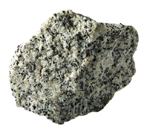

2.2 ESTRUCTURA Y COMPOSICIÓN DE LA GEOSFERA
Los datos obtenidos por los diferentes métodos de estudio de la geosfera demuestran que está dividida en tres capas concéntricas: corteza, manto y núcleo.
Corteza
Es la capa más superficial de la Tierra. Su espesor varía entre 6 km y 70 km. Existen dos tipos de corteza: continental y oceánica.
Corteza continental
Ocupa los continentes y las plataformas continentales. En su interior hay rocas poco densas y su temperatura aumenta 30 °C por cada kilómetro de profundidad, hasta alcanzar los 400 °C.
Corteza oceánica
Está presente en los fondos oceánicos. Sus rocas son más densas que las que constituyen la corteza continental. La temperatura varía de 0 °C a 1 000 °C.
Manto
Se localiza bajo la corteza hasta los 2 900 km. Su presión es mayor que la de la corteza y su temperatura varía entre 600 °C (cerca de la corteza) y 3 500 °C (cerca del núcleo). A pesar de las altas temperaturas, sus rocas no están fundidas debido a las altas presiones.
Núcleo
Es la capa más interna de la geosfera. Su temperatura oscila entre 4 000 °C y 5 500 °C, y la presión es más alta que en el manto. Estas condiciones físicas hacen que las rocas externas del núcleo estén fundidas, debido a las altas temperaturas, mientras que las rocas de la zona central se encuentran en estado sólido, a causa de las elevadas presiones.

Su composición es similar a la de los meteoritos del tipo sideritos, formados por hierro y níquel.